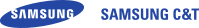
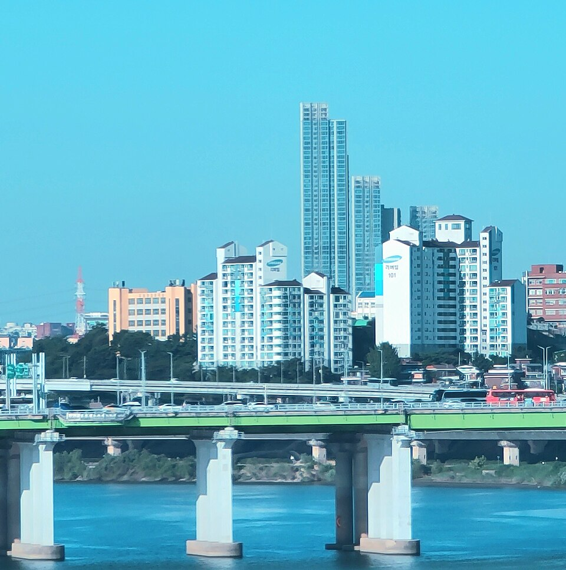
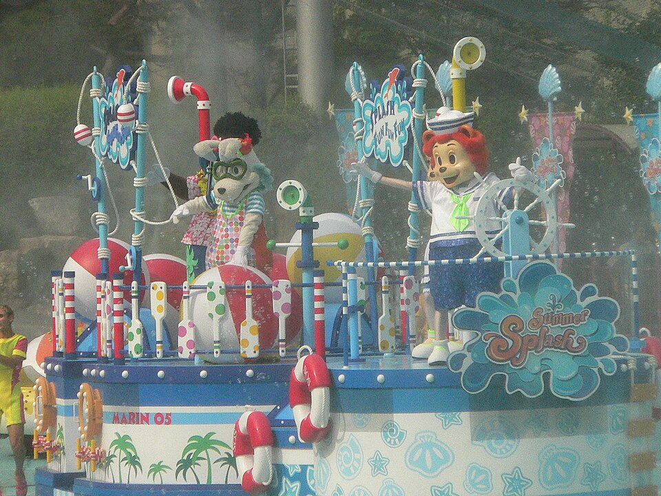

설립연도
1938년 (삼성상회에서 출발)

아파트 래미안을 짓는 건설, 세계 곳곳에서 자원과 물건을 사고파는 상사, 빈폴 같은 패션, 에버랜드를 운영하는 리조트 사업을 함께 하는 회사예요. 동시에 삼성바이오로직스의 최대주주이고 삼성전자 지분도 가지고 있어서, 삼성그룹 지배구조의 가장 위쪽에 있는 회사로 꼽혀요.
칸에 마우스를 올리거나 누르면 자세한 설명을 볼 수 있어요.

아파트 브랜드 래미안으로 잘 알려져 있지만, 매출은 반도체 공장 같은 첨단 시설과 발전소, 해외 대형 건물 공사에서 많이 나와요. 삼성전자 반도체 공장을 짓는 일도 맡아요.
대표 예래미안, 반도체 공장, 발전소, 해외 초고층 건물
철강, 화학제품, 에너지 자원 같은 물건을 여러 나라 사이에서 사고팔아 수수료와 차익을 남겨요. 요즘은 태양광·풍력 같은 신재생에너지 발전소를 직접 개발하는 일도 늘리고 있어요.
대표 예철강·화학 트레이딩, 태양광·풍력 발전 개발

빈폴, 구호 같은 자체 패션 브랜드와 해외 브랜드 수입 판매를 하고, 용인 에버랜드와 캐리비안 베이, 골프장을 운영해요.
대표 예빈폴, 구호, 에버랜드, 캐리비안 베이
세계적인 바이오 의약품 위탁생산 회사 삼성바이오로직스의 최대주주예요. 바이오 사업의 이익이 삼성물산 전체 실적에서 차지하는 몫이 점점 커지고 있어요.
대표 예삼성바이오로직스, 삼성에피스홀딩스 지분
| 기간 | 매출 | 영업이익 | 순이익 |
|---|
사업마다 겨루는 상대가 달라요